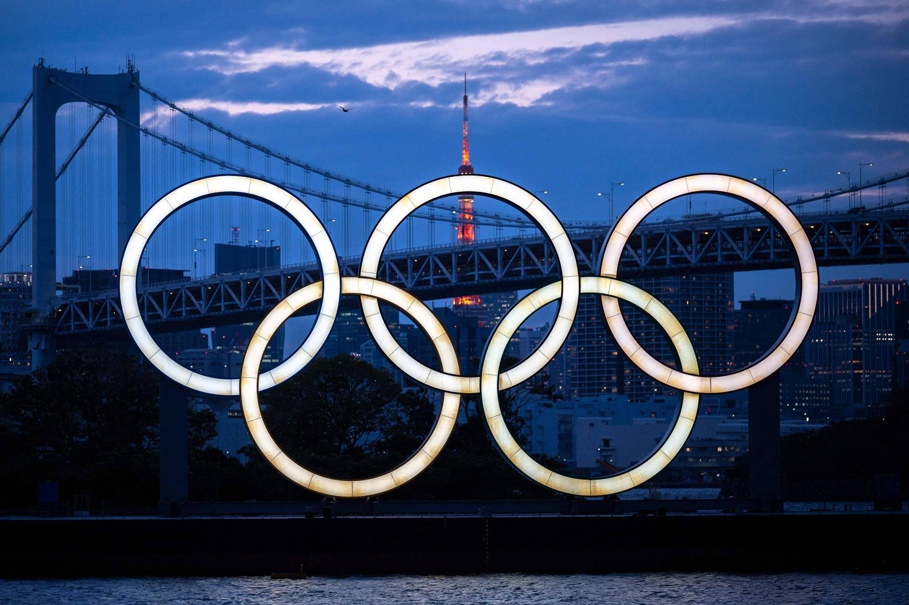

|  |
As Olimpíadas, também chamadas de Jogos Olímpicos, são uma competição de diferentes modalidades que a
cada quatro anos. É a maior celebração esportiva mundial e reúne participantes diversas nacionalidades.
O termo "Olimpíada", no singular, se refere ao intervalo entre uma edição e outra dos Jogos. Normalmente,
o período é de quatro anos. Como a edição de Tóquio 2020 foi adiada devido à pandemia da Covid-19, excepcionalmente,
dessa vez, são cinco. As Olimpíadas têm como objetivo unir o mundo através da prática dos esportes olímpicos.
Além da conquista de medalhas, as Olimpíadas têm como missão unir as nações de todo o planeta. De acordo com o Comitê
Olímpico do Brasil, o "Olimpismo tem como princípios a amizade, compreensão, mútua, solidariedade e jogo limpo (fair play)".
Trata-se de uma filosofia de vida. A ideia é que esses valores não fiquem restritos às disputas esportivas, mas tenham influencia
para todas pessoas. Olimpíadas ou Jogos Olímpicos são competições de diferentes modalidades esportivas que são realizadas a cada quatro anos,
onde participam atletas de todos os continentes do mundo. O termo no singular – Olimpíada – também costuma ser utilizado
para se referir ao hiato de quatro anos existente entre duas edições dos Jogos Olímpicos. O principal objetivo das Olimpíadas
e fomentar a união entre todas as nações do planeta, assim como sugere os Anéis Olímpicos, um dos principais símbolos das Olimpíadas.
As Olimpíadas são carregadas de ritos tradicionais como o translado da tocha, o acendimento da pira olímpica, a entrega
das medalhas, as cerimônias de abertura e de encerramento, entre outros.
História das Olimpíadas
Originalmente, os Jogos Olímpicos aconteciam na cidade grega de Olímpia
(daí o nome do evento), entre o século VIII a.C e o século V a.C, onde vários competidores participavam de jogos em homenagem à
honra de Zeus (deus dos deuses), e da deusa Hera (deusa da maternidade). Entre algumas das modalidades esportivas dos Jogos Olímpicos
da Antiguidade estavam: o arremesso de dardos, lançamento de disco, lutas, corridas, entre outras. Em 1894, o historiador francês Pierre
de Coubertin (conhecido como Barão de Coubertin), inspirado nas histórias sobre as Olimpíadas da Grécia Antiga, fundou o Comitê Olímpico
Internacional (COI), órgão responsável por organizar os Jogos Olímpicos da Modernidade. O COI decide quais modalidades podem participar
dos jogos. Os critérios para que um esporte possa se tornar olímpico são: ser praticado por homens de 4 continentes e em pelo menos 75
países e mulheres de 3 continentes em ao menos 40 países. Os primeiros Jogos Olímpicos da Era Moderna foram realizados em 1896, na cidade
de Atenas, na Grécia, reunindo participantes de 13 países. Atualmente, as Olimpíadas reúnem milhares de competidores de quase todos os países
do planeta, sendo considerado um dos eventos esportivos mais importantes do mundo. O Movimento Olímpico desencadeou uma série de outros eventos,
como os Jogos Olímpicos de Inverno, os Jogos Paralímpicos, e os Jogos Olímpicos da Juventude, por exemplo.
|
Significado e História da Bandeira
Os anéis representando os cinco continentes ficam no centro da bandeira olímpica. A primeira bandeira olímpica media 3 m x 2 m e foi
costurada na loja Bon Marché, em Paris. Os anéis entrelaçados representam os continentes. O azul é a Europa; o amarelo, a Ásia; o preto, a África;
o verde, a Oceania; e o vermelho, a América. “A bandeira olímpica tem fundo branco com cinco anés entrelaçados no centro: azul, amarelo, preto, verde
e vermelho. Esse desenho é simbólico. São os cinco continentes unidos pelo Olimpismo, enquanto pelo menos uma das seis cores aparece em todas as bandeiras
nacionais do mundo no presente momento”, escreveu Barão de Coubertin em texto publicado em 1931.
A bandeira olímpica tem um papel importante na cerimônia de abertura. Ela é hasteada logo depois que o chefe de estado da cidade-sede declara
oficialmente os Jogos abertos. É a última parte do protocolo antes da entrada em cena da tocha olímpica, que ainda passa pelas mãos de alguns
atletas até chegar até o escolhido para levá-la até a pira e acendê-la. Nos Jogos Olímpicos do Rio de Janeiro, a bandeira olímpica foi carregada
por Joaquim Cruz (atletismo), Emanuel Rêgo (vôlei de praia), Marta (futebol), Sandra Pires (vôlei de praia), Oscar Schimdt (basquete) e Torben Grael
(vela), além da juíza Ellen Grace e de Rosa Celia Pimentel, fundadora da instituição Pró-Criança Cardíaca, representantes da sociedade civil.
História da Bandeira Roubada
A primeira bandeira olímpica, que estreou em Antuérpia-1920, ficou desaparecida por 77 anos. Assim que os Jogos acabaram, ela não foi
encontrada e uma nova teve que ser feita para a Olimpíada de Paris-1924. Em 1997, durante um banquete promovido pelo Comitê Olímpico dos Estados Unidos,
Hal Haig Prieste, atleta que ganhou a medalha de bronze nos saltos ornamentais em Antuérpia, revelou em uma entrevista que a bandeira olímpica tinha ficado com ele.
Ao fim dos Jogos da Antuérpia, Prieste subiu no mastro onde a bandeira estava hasteada e a levou como recordação. Três anos depois da revelação,
no entanto, ela voltou para as mãos do COI numa cerimônia especial realizada em 2000 em Sydney. A Bandeira da Antuérpia está hoje exposta no Museu Olímpico
de Lausanne, Suíça, com uma placa agradecendo a Prieste pela “doação”.
Tocha Olímpica
A tocha é o mais antigo símbolo das olimpíadas e faz a ligação entre os jogos realizados na Grécia
Antiga e os disputados na Era Moderna. O fogo sagrado, tido como elemento purificador, era usado pelos gregos em frente aos seus principais templos,
com o Santuário de Olímpia, que recebia as competições esportivas. O acendimento da chama é feito com a luz solar por meio da skaphia, uma espécie
de espelho côncavo que agrega os raios do sol em um só ponto, provocando combustão. Essa tradição para acender a tocha ainda é mantida e é realizada
meses antes do início dos jogos, em frente ao Templo de Hera, por onze mulheres caracterizadas como sacerdotisas. Em 1928, os Jogos Olímpicos de Amsterdã
foram a primeira edição do evento na Era Moderna a ter uma pira olímpica acesa em um dos estádios. Já o revezamento da tocha foi implantado pela primeira
vez em Londres, no ano de 1948. Além de remeter a um contexto histórico, a Chama Olímpica simboliza a paz, a união e a amizade. Durante o revezamento
feito antes dos jogos em Olímpia, os mensageiros saíam com as tochas pelas cidades gregas anunciando a data das competições. Esses mensageiros anunciavam
também uma “trégua sagrada”, que cessava as guerras em curso até o fim dos jogos.
Atualmente, cada sede das olimpíadas desenvolve um design próprio para a tocha, levando em conta suas características culturais. Depois de acesa,
a tocha passa por algumas cidades da Grécia e segue para o país onde a competição será realizada, onde o objeto passa pelas mãos de diversos carregadores
nas principais cidades. O trajeto termina no estádio onde será celebrada a abertura.
.jpg)